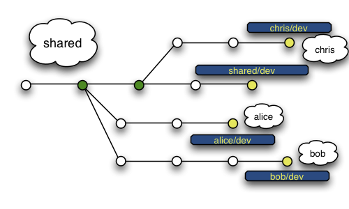
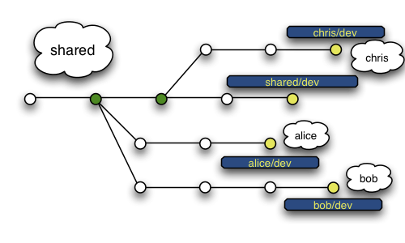

Getting into GIT

Gautam | [at]gautamNitish
Scope of the talk
- History
- What GIT is and is not.
- Getting GIT
- Why use it ?
- Working with GIT and
how it works with you - Sales Talk
- GitHub
History
It was written by Linus because he wanted something like bitKeeper and not something like CVS.Its a DVCS
with
- Lightning Fast Speed and
- Corruption resistance
Getting Git
-
Download it from git-scm.com
- Extract , Compile & Install
sudo apt-get install git-core
Why use it ?
Wait before I go on, lets look at why bother using a VCS ?

Synchronisation

Tracking
Blaming

Branching


So now why use git ?
- Full copy of the Repository
- Its Fast, really fast !!
-
Cheap Local Branching

- Its Distributed
- Its Easy to learn
Working with git
-
Create a repo
git init
-
Add files to the repo
git add .
-
Commit
git commit -m "Commit message"
-
Push
git push origin master
How git works with us

Sales Talk
Who is using git ?- Linux Kernel
- Android
- Eclipse
- Ruby on Rails
Github.com

GIT
Helps Coders

Repositories

Powerful

Distributed

Collaborate